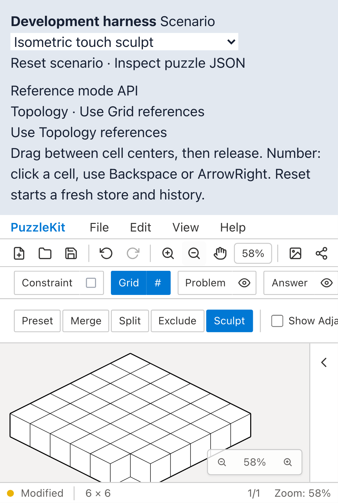
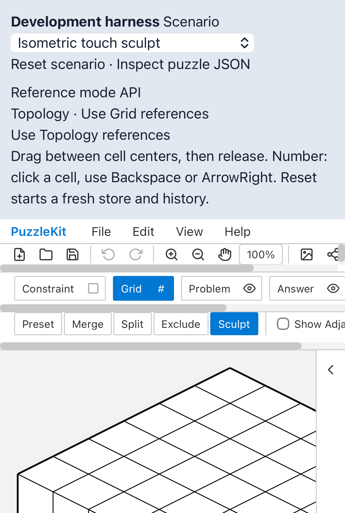
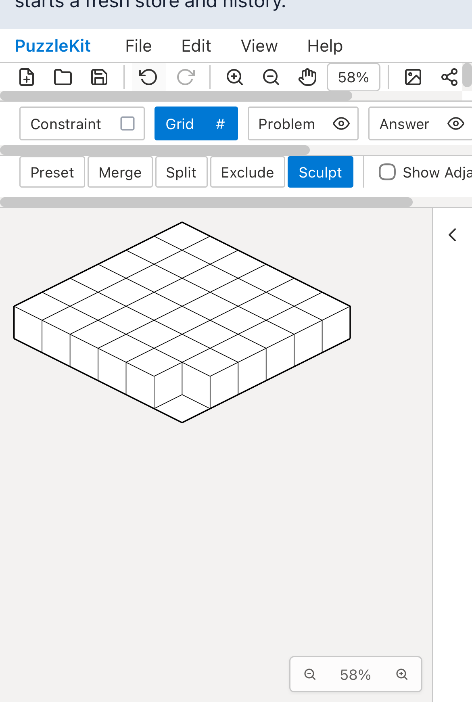
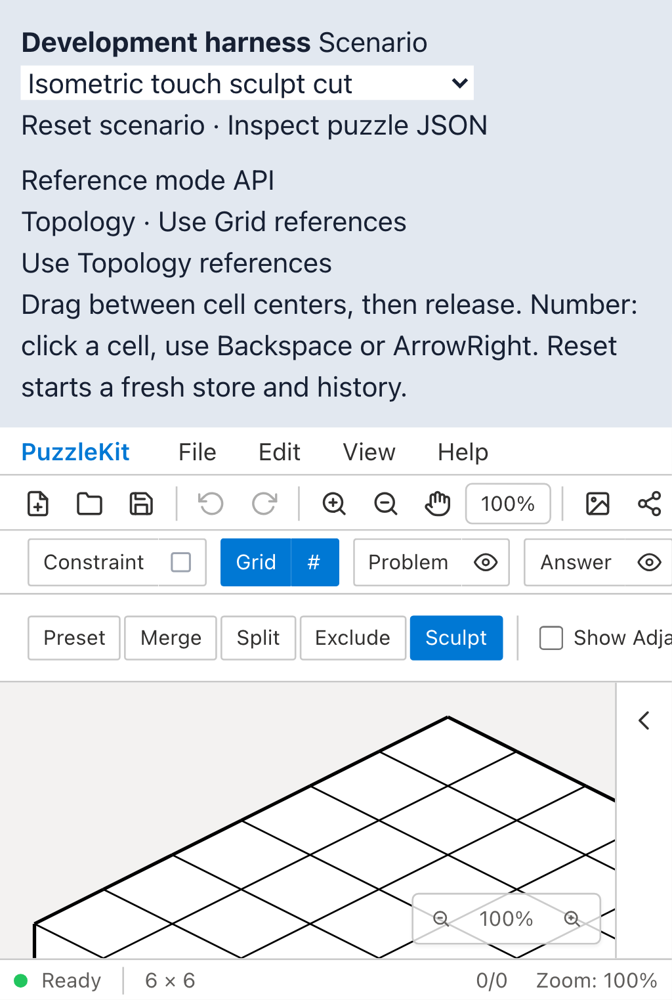
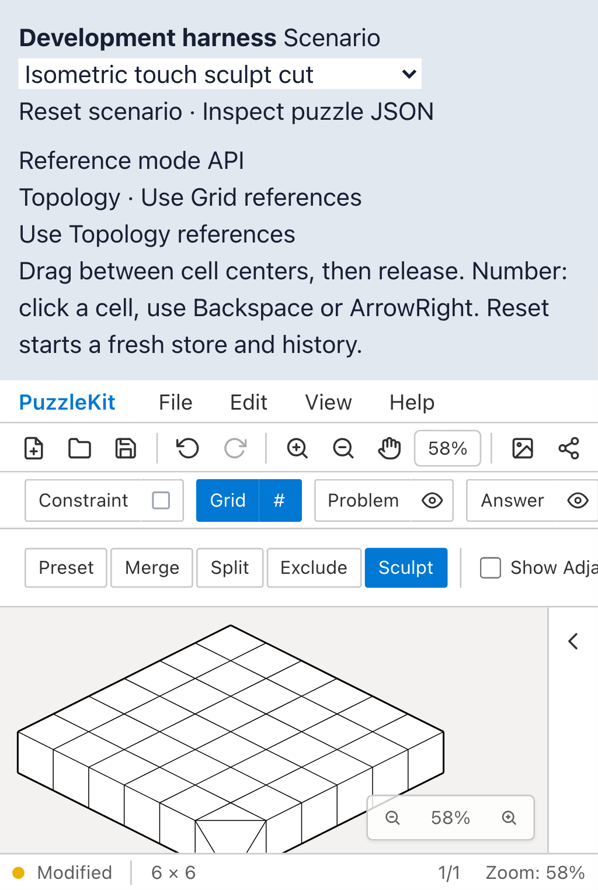
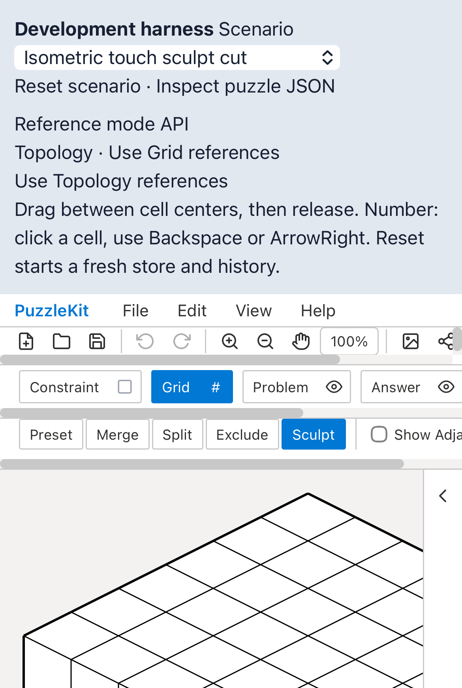

テスト操作手順の修正です。製品の彫刻処理は変更していません。Beforeは最初の頂点を画面外でもタップ。Afterはズーム・スクロールで表示し、可視の3セル頂点をタップします。形状変更とUndo/Redoの検査は維持しています。
PlaywrightのモバイルChromium・WebKit、表示領域390×580。物理端末ではありません。
revision・結果・SHA256




